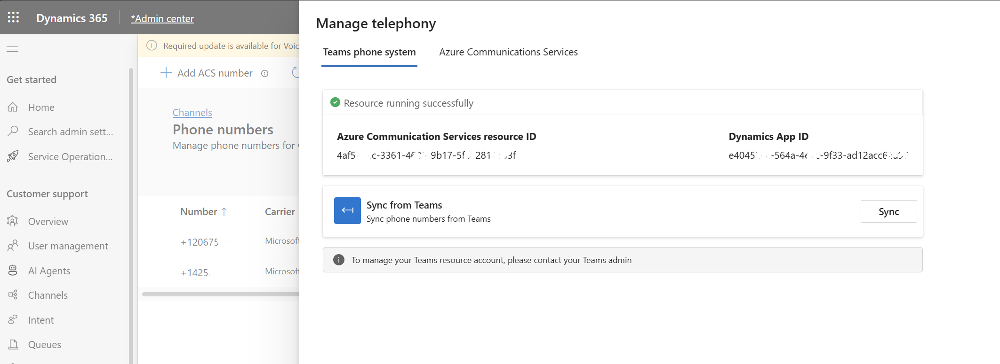

Required by New-CsOnlineApplicationInstance.
Contact Center Main Line, Sales Hotline). Pick anything — it's just how the account shows up in Teams admin and in D365.cc-mainline, support-line, sales-hotline — as long as the domain belongs to this tenant. The script will create the user automatically; it doesn't need to exist yet.Required to link the resource account to your D365 voice channel via ACS.

Determines how the number is assigned. The script changes accordingly.
Single script — installs the module, signs in, creates the resource account, binds Teams, and assigns the number.
After the script succeeds, complete the rest here.
TeamsResourceAccount.Read.All + admin consent that "Sync from Teams" requires.Set-CsPhoneNumberAssignment for this path).